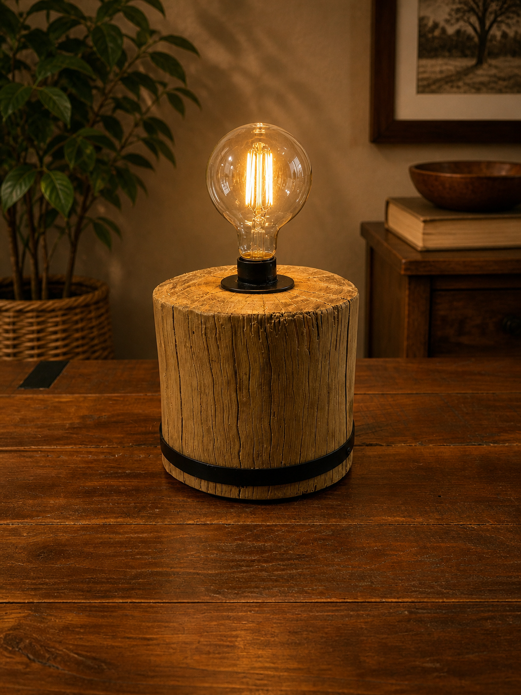
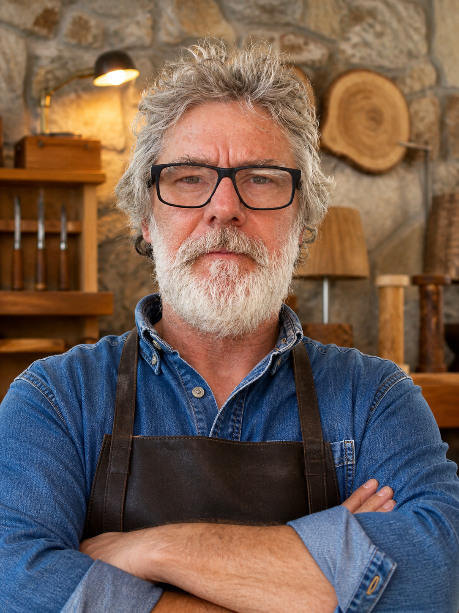

<!DOCTYPE html>
<html lang="pt-BR">
<head>
  <meta charset="UTF-8">
  <meta name="viewport" content="width=device-width, initial-scale=1.0">
  <title>Arte Madferro - Roberto Marson</title>
  <link href="https://fonts.googleapis.com/css2?family=Playfair+Display:wght@400;700&family=Work+Sans:wght@400;500;600&display=swap" rel="stylesheet">
  
  <script src="https://unpkg.com/react@18.3.1/umd/react.development.js" integrity="sha384-hD6/rw4ppMLGNu3tX5cjIb+uRZ7UkRJ6BPkLpg4hAu/6onKUg4lLsHAs9EBPT82L" crossorigin="anonymous"></script>
  <script src="https://unpkg.com/react-dom@18.3.1/umd/react-dom.development.js" integrity="sha384-u6aeetuaXnQ38mYT8rp6sbXaQe3NL9t+IBXmnYxwkUI2Hw4bsp2Wvmx4yRQF1uAm" crossorigin="anonymous"></script>
  <script src="https://unpkg.com/@babel/standalone@7.29.0/babel.min.js" integrity="sha384-m08KidiNqLdpJqLq95G/LEi8Qvjl/xUYll3QILypMoQ65QorJ9Lvtp2RXYGBFj1y" crossorigin="anonymous"></script>
  
  <style>
    * {
      margin: 0;
      padding: 0;
      box-sizing: border-box;
    }
    
    html {
      scroll-behavior: smooth;
    }
    
    body {
      font-family: 'Work Sans', sans-serif;
      background: #1a1a1a;
      color: #ffffff;
    }
    
    h1, h2, h3 {
      font-family: 'Playfair Display', serif;
    }
  </style>
</head>
<body>
  <div id="root"></div>
  
  <script type="text/babel" src="DetailView.jsx"></script>
  
  <script type="text/babel">
    const { useState } = React;
    
    // Translations
    const translations = {
      pt: {
        home: 'Início',
        gallery: 'Galeria',
        bio: 'Biografia',
        contact: 'Contato',
        hero_title: 'Arte em Madeira e Ferro',
        hero_subtitle: 'Peças únicas que unem história, filosofia e artesanato',
        explore: 'Explorar Obras',
        materials: 'Materiais',
        dimensions: 'Dimensões',
        year: 'Ano',
        inquire: 'Consultar sobre esta peça',
        bio_title: 'Roberto Marson',
        bio_intro: 'Onde a memória da madeira encontra a força do ferro',
        bio_text: 'Cada peça de Roberto Marson conta uma história de transformação. Madeiras de demolição com décadas de vida ganham uma segunda existência através do ferro forjado à mão. Inspirado pela arte rupestre e pelos vestígios do tempo, Roberto cria objetos funcionais que carregam alma e autenticidade. Suas criações não são apenas mobiliário — são testemunhos de resistência, beleza imperfeita e caráter genuíno. Peças para quem valoriza o artesanal, o único, o verdadeiro.',
        contact_title: 'Entre em Contato',
        contact_text: 'Interessado em uma peça ou tem uma ideia personalizada? Entre em contato.',
        whatsapp: 'Falar no WhatsApp',
      },
      es: {
        home: 'Inicio',
        gallery: 'Galería',
        bio: 'Biografía',
        contact: 'Contacto',
        hero_title: 'Arte en Madera y Hierro',
        hero_subtitle: 'Piezas únicas que unen historia, filosofía y artesanía',
        explore: 'Explorar Obras',
        materials: 'Materiales',
        dimensions: 'Dimensiones',
        year: 'Año',
        inquire: 'Consultar sobre esta pieza',
        bio_title: 'Roberto Marson',
        bio_intro: 'Donde la memoria de la madera encuentra la fuerza del hierro',
        bio_text: 'Cada pieza de Roberto Marson cuenta una historia de transformación. Maderas de demolición con décadas de vida reciben una segunda existencia a través del hierro forjado a mano. Inspirado por el arte rupestre y los vestigios del tiempo, Roberto crea objetos funcionales que llevan alma y autenticidad. Sus creaciones no son solo mobiliario — son testimonios de resistencia, belleza imperfecta y carácter genuino. Piezas para quien valora lo artesanal, lo único, lo verdadero.',
        contact_title: 'Contacto',
        contact_text: 'Interesado en una pieza o tiene una idea personalizada? Póngase en contacto.',
        whatsapp: 'Hablar por WhatsApp',
      },
      en: {
        home: 'Home',
        gallery: 'Gallery',
        bio: 'Biography',
        contact: 'Contact',
        hero_title: 'Art in Wood and Iron',
        hero_subtitle: 'Unique pieces uniting history, philosophy and craftsmanship',
        explore: 'Explore Works',
        materials: 'Materials',
        dimensions: 'Dimensions',
        year: 'Year',
        inquire: 'Inquire about this piece',
        bio_title: 'Roberto Marson',
        bio_intro: 'Where the memory of wood meets the strength of iron',
        bio_text: 'Each piece by Roberto Marson tells a story of transformation. Reclaimed wood with decades of life receives a second existence through hand-forged iron. Inspired by cave art and the traces of time, Roberto creates functional objects that carry soul and authenticity. His creations are not just furniture — they are testimonies of resilience, imperfect beauty, and genuine character. Pieces for those who value the handcrafted, the unique, the true.',
        contact_title: 'Get in Touch',
        contact_text: 'Interested in a piece or have a custom idea? Get in touch.',
        whatsapp: 'Chat on WhatsApp',
      },
    };
    
    // Categories
    const categories = {
      pt: {
        all: 'Todas',
        lighting: 'Iluminação',
        kitchen: 'Cozinha',
        decor: 'Decoração',
        furniture: 'Mobiliário',
      },
      es: {
        all: 'Todas',
        lighting: 'Iluminación',
        kitchen: 'Cocina',
        decor: 'Decoración',
        furniture: 'Mobiliario',
      },
      en: {
        all: 'All',
        lighting: 'Lighting',
        kitchen: 'Kitchen',
        decor: 'Decor',
        furniture: 'Furniture',
      },
    };
    
    // Artwork data
    const artworksData = {
      pt: [
        {
          title: 'Luminária Tronco Ancestral',
          image: 'assets/lamp-01.jpg',
          description: 'Peça escultural que transforma um tronco de madeira recuperada em luminária funcional. As bandas de ferro forjado abraçam a madeira envelhecida, criando um diálogo entre o orgânico e o industrial.',
          materials: 'Madeira de demolição, ferro forjado, componentes elétricos',
          dimensions: '25cm × 25cm × 30cm',
          category: 'lighting',
        },
        {
          title: 'Luminária de Mesa Arc',
          image: 'assets/lamp-desk-arc.jpg',
          description: 'Design elegante que combina base sólida de madeira recuperada com braço arqueado de ferro forjado. O foco industrial contrasta com a textura orgânica da madeira.',
          materials: 'Madeira recuperada, ferro forjado, componentes elétricos',
          dimensions: '30cm × 15cm × 40cm (altura)',
          category: 'lighting',
        },
        {
          title: 'Luminária de Piso Craftsman',
          image: 'assets/lamp-floor-craftsman.jpg',
          description: 'Luminária de piso minimalista com estrutura de ferro forjado e cúpula em vidro âmbar. Inspiração em design craftsman com execução contemporânea.',
          materials: 'Ferro forjado, vidro, componentes elétricos',
          dimensions: '35cm × 35cm × 165cm (altura)',
          category: 'lighting',
        },
        {
          title: 'Bandeja Artesanal',
          image: 'assets/tray-wood-iron.jpg',
          description: 'Bandeja em madeira recuperada com asas de ferro forjado e rebites de cobre. A veta natural da madeira é protagonista desta peça funcional.',
          materials: 'Madeira de demolição, ferro forjado, rebites de cobre',
          dimensions: '45cm × 30cm × 5cm',
          category: 'kitchen',
        },
        {
          title: 'Porta-facas Magnético Vertical',
          image: 'assets/knife-holder-magnetic.jpg',
          description: 'Escultura funcional que combina madeira recuperada vertical com barras magnéticas de ferro. As fissuras naturais da madeira criam uma estética rupestre.',
          materials: 'Madeira de demolição, ferro com ímãs de neodímio',
          dimensions: '40cm × 12cm × 8cm',
          category: 'kitchen',
        },
        {
          title: 'Suporte para Papel Toalha',
          image: 'assets/book-stands-pair.jpg',
          description: 'Suporte elegante com base de madeira recuperada e detalhes em ferro forjado com espirais decorativas. Design funcional e escultural para a cozinha.',
          materials: 'Madeira recuperada, ferro forjado',
          dimensions: '15cm × 12cm × 18cm',
          category: 'kitchen',
        },
        {
          title: 'Bandeja Fruteira Orgânica',
          image: 'assets/bowl-organic-large.jpg',
          description: 'Fruteira esculpida em madeira maciça recuperada com forma orgânica. Asas de ferro forjado nas extremidades. Uma peça única que celebra a textura natural da madeira.',
          materials: 'Madeira maciça recuperada, ferro forjado',
          dimensions: '65cm × 35cm × 12cm',
          category: 'kitchen',
        },
        {
          title: 'Bandeja Circular com Estrutura',
          image: 'assets/tray-circular-iron.jpg',
          description: 'Bandeja circular em madeira clara abraçada por estrutura de ferro forjado. Design limpo e funcional com toque industrial.',
          materials: 'Madeira recuperada, ferro forjado',
          dimensions: 'Ø 35cm × 5cm',
          category: 'kitchen',
        },
        {
          title: 'Porta-facas Minimalista',
          image: 'assets/knife-holder-frame.jpg',
          description: 'Suporte magnético todo em ferro forjado com design minimalista. Pode ser usado na parede ou sobre a mesa.',
          materials: 'Ferro forjado, ímãs de neodímio',
          dimensions: '30cm × 20cm × 8cm',
          category: 'kitchen',
        },
        {
          title: 'Luminária Rústica Vertical',
          image: 'assets/lamp-rustic-vertical.jpg',
          description: 'Peça vertical que explora a textura natural da madeira recuperada. Estrutura de ferro e iluminação integrada criam uma atmosfera dramática.',
          materials: 'Madeira de demolição, ferro forjado, componentes elétricos',
          dimensions: '20cm × 20cm × 55cm',
          category: 'lighting',
        },
        {
          title: 'Porta-facas Ponte',
          image: 'assets/knife-holder-bridge.jpg',
          description: 'Design tipo ponte com barra superior de madeira recuperada e estrutura de ferro forjado. Sistema magnético integrado.',
          materials: 'Madeira recuperada, ferro forjado, ímãs de neodímio',
          dimensions: '40cm × 15cm × 25cm',
          category: 'kitchen',
        },
        {
          title: 'Relógio de Lâmina de Serra',
          image: 'assets/clock-saw-blade.jpg',
          description: 'Relógio criado a partir de lâmina de serra circular oxidada e base de madeira recuperada. Celebração da história das ferramentas industriais.',
          materials: 'Lâmina de serra reciclada, madeira recuperada, mecanismo de relógio',
          dimensions: 'Ø 30cm × 8cm',
          category: 'decor',
        },
        {
          title: 'Par de Luminárias Bloco',
          image: 'assets/lamps-wood-blocks-pair.jpg',
          description: 'Par de luminárias minimalistas esculpidas em blocos de madeira maciça. Simplicidade e textura natural com lâmpadas Edison.',
          materials: 'Madeira maciça, componentes elétricos, lâmpadas Edison',
          dimensions: '12cm × 12cm × 15cm (cada)',
          category: 'lighting',
        },
        {
          title: 'Porta-rolos de Cozinha',
          image: 'assets/paper-towel-holder.jpg',
          description: 'Porta-rolos de papel toalha em ferro forjado com detalhes em espiral. Funcional e decorativo.',
          materials: 'Ferro forjado',
          dimensions: '15cm × 15cm × 35cm',
          category: 'kitchen',
        },
        {
          title: 'Cabideiro de Parede',
          image: 'assets/wall-hooks.jpg',
          description: 'Perchero de parede em madeira recuperada com ganchos de ferro forjado. Prático e decorativo para entrada ou quarto.',
          materials: 'Madeira de demolição, ferro forjado',
          dimensions: '60cm × 15cm × 8cm',
          category: 'decor',
        },
        {
          title: 'Farol Medieval',
          image: 'assets/lantern-medieval.jpg',
          description: 'Farol em ferro forjado com vidro, inspirado em design medieval. Perfeito para criar atmosfera dramática.',
          materials: 'Ferro forjado, vidro',
          dimensions: '25cm × 25cm × 45cm',
          category: 'lighting',
        },
        {
          title: 'Arandela de Parede',
          image: 'assets/wall-lantern.jpg',
          description: 'Arandela decorativa com braço de ferro forjado e farol suspenso. Ideal para áreas externas e entradas.',
          materials: 'Ferro forjado, vidro',
          dimensions: '40cm × 30cm × 50cm',
          category: 'lighting',
        },
        {
          title: 'Relógio de Parede em Madeira',
          image: 'assets/wall-clock-wood.jpg',
          description: 'Relógio de parede esculpido em madeira recuperada com vetas naturais impressionantes. Números em ferro forjado.',
          materials: 'Madeira maciça recuperada, ferro forjado, mecanismo de relógio',
          dimensions: 'Ø 45cm × 5cm',
          category: 'decor',
        },
        {
          title: 'Bandeja Retangular',
          image: 'assets/tray-rectangular-handles.jpg',
          description: 'Bandeja retangular em madeira recuperada com asas de ferro forjado. Vetas naturais em destaque.',
          materials: 'Madeira de demolição, ferro forjado',
          dimensions: '50cm × 35cm × 6cm',
          category: 'kitchen',
        },
        {
          title: 'Mesa de Centro Tronco',
          image: 'assets/coffee-table-trunk.jpg',
          description: 'Mesa de centro com tronco de madeira maciça e pernas hairpin de ferro. Design moderno rústico.',
          materials: 'Madeira maciça, ferro forjado',
          dimensions: '80cm × 50cm × 45cm (altura)',
          category: 'furniture',
        },
        {
          title: 'Fruteira Esculpida em Madeira',
          image: 'assets/sink-wood-carved.jpg',
          description: 'Fruteira tallada em madeira maciça com forma orgânica e suporte de ferro forjado. Peça única de arte funcional.',
          materials: 'Madeira maciça, ferro forjado',
          dimensions: '60cm × 45cm × 15cm',
          category: 'kitchen',
        },
        {
          title: 'Luminária Tronco com Cúpula',
          image: 'assets/lamp-trunk-black-shade.jpg',
          description: 'Luminária de mesa com base de tronco natural e cúpula preta. Design contemporâneo com toque rústico.',
          materials: 'Madeira natural, tecido, componentes elétricos',
          dimensions: '30cm × 30cm × 45cm (altura)',
          category: 'lighting',
        },
        {
          title: 'Tábua de Churrasco',
          image: 'assets/cutting-board-grooved.jpg',
          description: 'Tábua para churrasco com ranuras para suco e asas de ferro forjado. Madeira recuperada de alta qualidade.',
          materials: 'Madeira de demolição, ferro forjado',
          dimensions: '50cm × 30cm × 3cm',
          category: 'kitchen',
        },
        {
          title: 'Atril para Livros',
          image: 'assets/decorative-board-scrollwork.jpg',
          description: 'Atril decorativo em madeira recuperada com moldura ornamental de ferro forjado. Perfeito para livros de receitas, bíblias ou livros de mesa.',
          materials: 'Madeira recuperada, ferro forjado',
          dimensions: '40cm × 25cm × 5cm',
          category: 'decor',
        },
        {
          title: 'Luminária Tronco Escultural',
          image: 'assets/lamp-hollow-trunk-sculptural.jpg',
          description: 'Escultura luminosa tallada em tronco oco. Forma orgânica única com iluminação dramática.',
          materials: 'Madeira maciça, componentes elétricos',
          dimensions: '20cm × 20cm × 50cm',
          category: 'lighting',
        },
        {
          title: 'Luminária Anel de Madeira',
          image: 'assets/lamp-circular-ring.jpg',
          description: 'Luminária circular tallada em anel de madeira com suporte decorativo de ferro forjado. Peça artística e funcional.',
          materials: 'Madeira maciça, ferro forjado, componentes elétricos',
          dimensions: 'Ø 40cm × 15cm',
          category: 'lighting',
        },
        {
          title: 'Luminária Industrial',
          image: 'assets/lamp-industrial-rebar.jpg',
          description: 'Luminária arquitetônica com blocos de madeira e barras de ferro corrugado. Design industrial contemporâneo.',
          materials: 'Madeira recuperada, ferro corrugado, componentes elétricos',
          dimensions: '15cm × 15cm × 45cm',
          category: 'lighting',
        },
        {
          title: 'Porta-papel Toalha e Bandeja Temperos',
          image: 'assets/toilet-paper-holder-decorative.jpg',
          description: 'Conjunto 2 em 1: porta-papel toalha com bandeja para temperos integrada. Base de madeira recuperada e estrutura ornamental de ferro forjado.',
          materials: 'Madeira recuperada, ferro forjado',
          dimensions: '20cm × 15cm × 25cm',
          category: 'kitchen',
        },
        {
          title: 'Porta-rolos de Mesa',
          image: 'assets/paper-towel-holder-table.jpg',
          description: 'Porta-rolos de papel toalha com base de madeira envelhecida e estrutura de ferro forjado. Prático e decorativo.',
          materials: 'Madeira recuperada, ferro forjado',
          dimensions: '25cm × 15cm × 30cm',
          category: 'kitchen',
        },
        {
          title: 'Mesa de Centro Redonda',
          image: 'assets/coffee-table-round-trunk.jpg',
          description: 'Mesa de centro com tronco circular de madeira maciça e base de ferro com rodízios. Versátil e rústica.',
          materials: 'Madeira maciça, ferro forjado, rodízios',
          dimensions: 'Ø 60cm × 40cm (altura)',
          category: 'furniture',
        },
        {
          title: 'Base Decorativa Carbonizada',
          image: 'assets/decorative-base-charred.jpg',
          description: 'Base decorativa circular em madeira carbonizada com textura de rachaduras naturais. Peça escultural única.',
          materials: 'Madeira carbonizada',
          dimensions: 'Ø 35cm × 8cm',
          category: 'decor',
        },
        {
          title: 'Porta-rolos Natural',
          image: 'assets/paper-towel-holder-natural.jpg',
          description: 'Porta-rolos de papel toalha com base de madeira natural e estrutura decorativa. Design elegante e funcional.',
          materials: 'Madeira natural, ferro forjado',
          dimensions: '30cm × 15cm × 35cm',
          category: 'kitchen',
        },
        {
          title: 'Aparador com Arabescos',
          image: 'assets/console-table-scrollwork.jpg',
          description: 'Aparador com tábua grossa de madeira recuperada e estrutura decorativa com espirais. Elegante para sala ou entrada.',
          materials: 'Madeira de demolição, ferro forjado',
          dimensions: '120cm × 40cm × 75cm (altura)',
          category: 'furniture',
        },
        {
          title: 'Gabinete de Banheiro Completo',
          image: 'assets/bathroom-vanity-complete.jpg',
          description: 'Gabinete de banheiro com tábua de madeira recuperada, estrutura ornamental de ferro forjado, prateleira inferior e porta-papel integrado.',
          materials: 'Madeira de demolição, ferro forjado',
          dimensions: '70cm × 45cm × 85cm (altura)',
          category: 'furniture',
        },
        {
          title: 'Mesa Esquinera em L',
          image: 'assets/corner-table-L-shape.jpg',
          description: 'Mesa esquinera em L com tábuas de madeira recuperada e estrutura decorativa de ferro forjado. Perfeita para otimizar espaços.',
          materials: 'Madeira de demolição, ferro forjado',
          dimensions: '100cm × 100cm × 75cm (altura)',
          category: 'furniture',
        },
        {
          title: 'Tábua de Corte com Pés',
          image: 'assets/cutting-board-footed.jpg',
          description: 'Tábua de corte esculpida em madeira maciça com bordas orgânicas e pés de ferro forjado. Funcional e decorativa.',
          materials: 'Madeira maciça, ferro forjado',
          dimensions: '35cm × 25cm × 8cm (altura)',
          category: 'kitchen',
        },
        {
          title: 'Prateleiras de Vigas Maciças',
          image: 'assets/entryway-bench-beams.jpg',
          description: 'Prateleiras de parede com vigas maciças de madeira recuperada e suportes de ferro forjado. Design robusto e industrial. Dupla altura para maior capacidade.',
          materials: 'Vigas de madeira de demolição, ferro forjado',
          dimensions: '150cm × 35cm × 45cm (altura total)',
          category: 'furniture',
        },
        {
          title: 'Tábua de Corte com Alça',
          image: 'assets/cutting-board-handled.jpg',
          description: 'Tábua de corte em madeira nobre recuperada com vetas ricas e alça integrada. Acabamento premium com verniz protetor.',
          materials: 'Madeira nobre recuperada',
          dimensions: '40cm × 28cm × 2cm',
          category: 'kitchen',
        },
        {
          title: 'Luminária de Piso Moderna',
          image: 'assets/floor-lamp-black-shade.jpg',
          description: 'Luminária de piso com base de madeira recuperada, haste de ferro forjado e cúpula preta plissada. Design contemporâneo e elegante.',
          materials: 'Madeira recuperada, ferro forjado, cúpula de tecido',
          dimensions: '35cm × 35cm × 160cm (altura)',
          category: 'lighting',
        },
        {
          title: 'Luminária Arc com Mesa Lateral',
          image: 'assets/floor-lamp-arc-side-table.jpg',
          description: 'Conjunto luminária de piso arqueada com mesa lateral integrada. Base de madeira recuperada, estrutura de ferro forjado e cúpula bege.',
          materials: 'Madeira recuperada, ferro forjado, cúpula de tecido',
          dimensions: '40cm × 40cm × 170cm (altura)',
          category: 'lighting',
        },
        {
          title: 'Luminária de Mesa Madeira Escura',
          image: 'assets/table-lamp-black-wood.jpg',
          description: 'Luminária de mesa com base em madeira maciça escura com textura natural marcante. Cúpula bege em tecido.',
          materials: 'Madeira maciça, componentes elétricos, cúpula de tecido',
          dimensions: '20cm × 20cm × 55cm (altura)',
          category: 'lighting',
        },
      ],
      es: [
        {
          title: 'Lámpara Tronco Ancestral',
          image: 'assets/lamp-01.jpg',
          description: 'Pieza escultórica que transforma un tronco de madera recuperada en lámpara funcional. Las bandas de hierro forjado abrazan la madera envejecida, creando un diálogo entre lo orgánico y lo industrial.',
          materials: 'Madera de demolición, hierro forjado, componentes eléctricos',
          dimensions: '25cm × 25cm × 30cm',
        },
        {
          title: 'Lámpara de Mesa Arc',
          image: 'assets/lamp-desk-arc.jpg',
          description: 'Diseño elegante que combina base sólida de madera recuperada con brazo arqueado de hierro forjado. El foco industrial contrasta con la textura orgánica de la madera.',
          materials: 'Madera recuperada, hierro forjado, componentes eléctricos',
          dimensions: '30cm × 15cm × 40cm (altura)',
        },
        {
          title: 'Lámpara de Piso Craftsman',
          image: 'assets/lamp-floor-craftsman.jpg',
          description: 'Lámpara de piso minimalista con estructura de hierro forjado y cúpula en vidrio ámbar. Inspiración en diseño craftsman con ejecución contemporánea.',
          materials: 'Hierro forjado, vidrio, componentes eléctricos',
          dimensions: '35cm × 35cm × 165cm (altura)',
        },
        {
          title: 'Bandeja Artesanal',
          image: 'assets/tray-wood-iron.jpg',
          description: 'Bandeja en madera recuperada con asas de hierro forjado y remaches de cobre. La veta natural de la madera es protagonista de esta pieza funcional.',
          materials: 'Madera de demolición, hierro forjado, remaches de cobre',
          dimensions: '45cm × 30cm × 5cm',
        },
        {
          title: 'Portacuchillos Magnético Vertical',
          image: 'assets/knife-holder-magnetic.jpg',
          description: 'Escultura funcional que combina madera recuperada vertical con barras magnéticas de hierro. Las fisuras naturales de la madera crean una estética rupestre.',
          materials: 'Madera de demolición, hierro con imanes de neodimio',
          dimensions: '40cm × 12cm × 8cm',
        },
        {
          title: 'Soporte para Papel Toalla',
          image: 'assets/book-stands-pair.jpg',
          description: 'Soporte elegante con base de madera recuperada y detalles en hierro forjado con espirales decorativas. Diseño funcional y escultural para la cocina.',
          materials: 'Madera recuperada, hierro forjado',
          dimensions: '15cm × 12cm × 18cm',
        },
        {
          title: 'Batea Orgánica Grande',
          image: 'assets/bowl-organic-large.jpg',
          description: 'Batea esculpida en madera maciza recuperada con forma orgánica. Asas de hierro forjado en los extremos. Una pieza única que celebra la textura natural de la madera.',
          materials: 'Madera maciza recuperada, hierro forjado',
          dimensions: '65cm × 35cm × 12cm',
        },
        {
          title: 'Bandeja Circular con Estructura',
          image: 'assets/tray-circular-iron.jpg',
          description: 'Bandeja circular en madera clara abrazada por estructura de hierro forjado. Diseño limpio y funcional con toque industrial.',
          materials: 'Madera recuperada, hierro forjado',
          dimensions: 'Ø 35cm × 5cm',
        },
        {
          title: 'Portacuchillos Minimalista',
          image: 'assets/knife-holder-frame.jpg',
          description: 'Soporte magnético todo en hierro forjado con diseño minimalista. Puede usarse en la pared o sobre la mesa.',
          materials: 'Hierro forjado, imanes de neodimio',
          dimensions: '30cm × 20cm × 8cm',
        },
        {
          title: 'Lámpara Rústica Vertical',
          image: 'assets/lamp-rustic-vertical.jpg',
          description: 'Pieza vertical que explora la textura natural de la madera recuperada. Estructura de hierro e iluminación integrada crean una atmósfera dramática.',
          materials: 'Madera de demolición, hierro forjado, componentes eléctricos',
          dimensions: '20cm × 20cm × 55cm',
        },
        {
          title: 'Portacuchillos Puente',
          image: 'assets/knife-holder-bridge.jpg',
          description: 'Diseño tipo puente con barra superior de madera recuperada y estructura de hierro forjado. Sistema magnético integrado.',
          materials: 'Madera recuperada, hierro forjado, imanes de neodimio',
          dimensions: '40cm × 15cm × 25cm',
        },
        {
          title: 'Reloj de Hoja de Sierra',
          image: 'assets/clock-saw-blade.jpg',
          description: 'Reloj creado a partir de hoja de sierra circular oxidada y base de madera recuperada. Celebración de la historia de las herramientas industriales.',
          materials: 'Hoja de sierra reciclada, madera recuperada, mecanismo de reloj',
          dimensions: 'Ø 30cm × 8cm',
        },
        {
          title: 'Par de Lámparas Bloque',
          image: 'assets/lamps-wood-blocks-pair.jpg',
          description: 'Par de lámparas minimalistas esculpidas en bloques de madera maciza. Simplicidad y textura natural con bombillas Edison.',
          materials: 'Madera maciza, componentes eléctricos, bombillas Edison',
          dimensions: '12cm × 12cm × 15cm (cada una)',
        },
        {
          title: 'Portarrollos de Cocina',
          image: 'assets/paper-towel-holder.jpg',
          description: 'Portarrollos de papel toalla en hierro forjado con detalles en espiral. Funcional y decorativo.',
          materials: 'Hierro forjado',
          dimensions: '15cm × 15cm × 35cm',
        },
      ],
      en: [
        {
          title: 'Ancestral Log Lamp',
          image: 'assets/lamp-01.jpg',
          description: 'Sculptural piece that transforms a reclaimed wood log into a functional lamp. Forged iron bands embrace the aged wood, creating a dialogue between organic and industrial.',
          materials: 'Salvaged wood, forged iron, electrical components',
          dimensions: '25cm × 25cm × 30cm',
        },
        {
          title: 'Arc Desk Lamp',
          image: 'assets/lamp-desk-arc.jpg',
          description: 'Elegant design combining solid reclaimed wood base with arched forged iron arm. Industrial bulb contrasts with the organic wood texture.',
          materials: 'Reclaimed wood, forged iron, electrical components',
          dimensions: '30cm × 15cm × 40cm (height)',
        },
        {
          title: 'Craftsman Floor Lamp',
          image: 'assets/lamp-floor-craftsman.jpg',
          description: 'Minimalist floor lamp with forged iron structure and amber glass shade. Craftsman-inspired design with contemporary execution.',
          materials: 'Forged iron, glass, electrical components',
          dimensions: '35cm × 35cm × 165cm (height)',
        },
        {
          title: 'Artisan Tray',
          image: 'assets/tray-wood-iron.jpg',
          description: 'Reclaimed wood tray with forged iron handles and copper rivets. The natural wood grain is the protagonist of this functional piece.',
          materials: 'Salvaged wood, forged iron, copper rivets',
          dimensions: '45cm × 30cm × 5cm',
        },
        {
          title: 'Vertical Magnetic Knife Holder',
          image: 'assets/knife-holder-magnetic.jpg',
          description: 'Functional sculpture combining vertical reclaimed wood with magnetic iron bars. Natural wood fissures create a cave-art aesthetic.',
          materials: 'Salvaged wood, iron with neodymium magnets',
          dimensions: '40cm × 12cm × 8cm',
        },
        {
          title: 'Paper Towel Holder',
          image: 'assets/book-stands-pair.jpg',
          description: 'Elegant holder with reclaimed wood base and forged iron details with decorative spirals. Functional and sculptural design for the kitchen.',
          materials: 'Reclaimed wood, forged iron',
          dimensions: '15cm × 12cm × 18cm',
        },
        {
          title: 'Large Organic Bowl',
          image: 'assets/bowl-organic-large.jpg',
          description: 'Bowl carved from solid reclaimed wood with organic form. Forged iron handles at the ends. A unique piece celebrating natural wood texture.',
          materials: 'Solid reclaimed wood, forged iron',
          dimensions: '65cm × 35cm × 12cm',
        },
        {
          title: 'Circular Tray with Frame',
          image: 'assets/tray-circular-iron.jpg',
          description: 'Circular light wood tray embraced by forged iron structure. Clean, functional design with industrial touch.',
          materials: 'Reclaimed wood, forged iron',
          dimensions: 'Ø 35cm × 5cm',
        },
        {
          title: 'Minimalist Knife Holder',
          image: 'assets/knife-holder-frame.jpg',
          description: 'All forged iron magnetic holder with minimalist design. Can be used on wall or countertop.',
          materials: 'Forged iron, neodymium magnets',
          dimensions: '30cm × 20cm × 8cm',
        },
        {
          title: 'Rustic Vertical Lamp',
          image: 'assets/lamp-rustic-vertical.jpg',
          description: 'Vertical piece exploring the natural texture of reclaimed wood. Iron structure and integrated lighting create a dramatic atmosphere.',
          materials: 'Salvaged wood, forged iron, electrical components',
          dimensions: '20cm × 20cm × 55cm',
        },
        {
          title: 'Bridge Knife Holder',
          image: 'assets/knife-holder-bridge.jpg',
          description: 'Bridge-style design with reclaimed wood top bar and forged iron structure. Integrated magnetic system.',
          materials: 'Reclaimed wood, forged iron, neodymium magnets',
          dimensions: '40cm × 15cm × 25cm',
        },
        {
          title: 'Saw Blade Clock',
          image: 'assets/clock-saw-blade.jpg',
          description: 'Clock created from oxidized circular saw blade and reclaimed wood base. Celebration of industrial tool history.',
          materials: 'Recycled saw blade, reclaimed wood, clock mechanism',
          dimensions: 'Ø 30cm × 8cm',
        },
        {
          title: 'Pair of Block Lamps',
          image: 'assets/lamps-wood-blocks-pair.jpg',
          description: 'Pair of minimalist lamps carved from solid wood blocks. Simplicity and natural texture with Edison bulbs.',
          materials: 'Solid wood, electrical components, Edison bulbs',
          dimensions: '12cm × 12cm × 15cm (each)',
        },
        {
          title: 'Kitchen Paper Towel Holder',
          image: 'assets/paper-towel-holder.jpg',
          description: 'Paper towel holder in forged iron with spiral details. Functional and decorative.',
          materials: 'Forged iron',
          dimensions: '15cm × 15cm × 35cm',
        },
      ],
    };
    
    const App = () => {
      const [currentLang, setCurrentLang] = useState('pt');
      const [selectedWork, setSelectedWork] = useState(null);
      const [selectedCategory, setSelectedCategory] = useState('all');
      const t = translations[currentLang];
      const cats = categories[currentLang];
      const allArtworks = artworksData[currentLang];
      const artworks = selectedCategory === 'all' 
        ? allArtworks 
        : allArtworks.filter(work => work.category === selectedCategory);
      
      const scrollToSection = (sectionId) => {
        document.getElementById(sectionId)?.scrollIntoView({ behavior: 'smooth' });
      };
      
      const navStyles = {
        nav: {
          position: 'fixed',
          top: 0,
          left: 0,
          right: 0,
          background: 'rgba(26, 26, 26, 0.95)',
          backdropFilter: 'blur(10px)',
          zIndex: 100,
          borderBottom: '1px solid rgba(255, 255, 255, 0.1)',
        },
        container: {
          maxWidth: '1400px',
          margin: '0 auto',
          padding: '24px 40px',
          display: 'flex',
          justifyContent: 'space-between',
          alignItems: 'center',
        },
        logo: {
          fontSize: '24px',
          fontWeight: '700',
          letterSpacing: '2px',
          textDecoration: 'none',
          color: '#D4A574',
          cursor: 'pointer',
        },
        menu: {
          display: 'flex',
          gap: '40px',
          alignItems: 'center',
          listStyle: 'none',
          margin: 0,
          padding: 0,
        },
        link: {
          textDecoration: 'none',
          color: '#ffffff',
          fontSize: '16px',
          fontWeight: '500',
          transition: 'color 0.2s',
          cursor: 'pointer',
        },
        langSelector: {
          display: 'flex',
          gap: '8px',
          borderLeft: '1px solid rgba(255, 255, 255, 0.2)',
          paddingLeft: '32px',
        },
        langButton: {
          background: 'none',
          border: 'none',
          padding: '4px 8px',
          fontSize: '14px',
          fontWeight: '600',
          cursor: 'pointer',
          color: '#ffffff',
          opacity: 0.5,
          transition: 'opacity 0.2s',
        },
        langButtonActive: {
          opacity: 1,
          color: '#D4A574',
        },
      };
      
      const heroStyles = {
        container: {
          minHeight: '100vh',
          display: 'flex',
          alignItems: 'center',
          justifyContent: 'center',
          padding: '120px 40px 80px',
          background: 'linear-gradient(135deg, #1a1a1a 0%, #2d2d2d 100%)',
          position: 'relative',
          overflow: 'hidden',
        },
        texture: {
          position: 'absolute',
          top: 0,
          left: 0,
          right: 0,
          bottom: 0,
          backgroundImage: 'repeating-linear-gradient(0deg, transparent, transparent 2px, rgba(255,255,255,0.02) 2px, rgba(255,255,255,0.02) 4px)',
          pointerEvents: 'none',
        },
        content: {
          maxWidth: '1400px',
          width: '100%',
          display: 'grid',
          gridTemplateColumns: '1fr 1fr',
          gap: '80px',
          alignItems: 'center',
          position: 'relative',
          zIndex: 1,
        },
        textSection: {
          paddingRight: '40px',
        },
        title: {
          fontSize: '82px',
          fontWeight: '700',
          lineHeight: '1',
          marginBottom: '32px',
          color: '#ffffff',
          letterSpacing: '-2px',
          textTransform: 'uppercase',
        },
        accent: {
          color: '#D4A574',
        },
        subtitle: {
          fontSize: '20px',
          lineHeight: '1.6',
          color: '#cccccc',
          marginBottom: '48px',
          fontWeight: '400',
        },
        cta: {
          display: 'inline-block',
          padding: '18px 48px',
          background: '#D4A574',
          color: '#1a1a1a',
          textDecoration: 'none',
          fontSize: '16px',
          fontWeight: '700',
          textTransform: 'uppercase',
          letterSpacing: '1px',
          transition: 'all 0.3s',
          cursor: 'pointer',
          border: 'none',
          position: 'relative',
          overflow: 'hidden',
        },
        imageSection: {
          position: 'relative',
        },
        featuredImage: {
          width: '100%',
          height: '650px',
          objectFit: 'cover',
          border: '2px solid #D4A574',
          boxShadow: '0 0 60px rgba(212, 165, 116, 0.3)',
        },
      };
      
      const galleryStyles = {
        container: {
          padding: '120px 40px',
          background: '#1a1a1a',
          minHeight: '100vh',
        },
        title: {
          fontSize: '56px',
          fontWeight: '700',
          textAlign: 'center',
          marginBottom: '48px',
          color: '#ffffff',
          textTransform: 'uppercase',
          letterSpacing: '-1px',
        },
        filters: {
          display: 'flex',
          gap: '16px',
          justifyContent: 'center',
          marginBottom: '60px',
          flexWrap: 'wrap',
        },
        filterButton: {
          padding: '12px 28px',
          background: 'transparent',
          border: '2px solid rgba(212, 165, 116, 0.3)',
          color: '#cccccc',
          fontSize: '16px',
          fontWeight: '600',
          cursor: 'pointer',
          borderRadius: '50px',
          transition: 'all 0.3s',
        },
        filterButtonActive: {
          background: '#D4A574',
          color: '#1a1a1a',
          borderColor: '#D4A574',
        },
        grid: {
          display: 'grid',
          gridTemplateColumns: 'repeat(auto-fill, minmax(300px, 1fr))',
          gap: '32px',
          maxWidth: '1400px',
          margin: '0 auto',
        },
        item: {
          cursor: 'pointer',
          position: 'relative',
          aspectRatio: '1',
          overflow: 'hidden',
          borderRadius: '4px',
          background: '#2d2d2d',
        },
        image: {
          width: '100%',
          height: '100%',
          objectFit: 'cover',
          transition: 'transform 0.4s ease',
        },
        overlay: {
          position: 'absolute',
          bottom: 0,
          left: 0,
          right: 0,
          background: 'linear-gradient(to top, rgba(0,0,0,0.9), transparent)',
          padding: '24px 16px 16px',
          opacity: 0,
          transition: 'opacity 0.3s ease',
        },
        itemTitle: {
          color: 'white',
          fontSize: '18px',
          fontWeight: '500',
          margin: 0,
        },
      };
      
      const bioStyles = {
        container: {
          minHeight: '100vh',
          padding: '120px 40px',
          background: '#2d2d2d',
          display: 'flex',
          alignItems: 'center',
        },
        content: {
          maxWidth: '1200px',
          margin: '0 auto',
          display: 'grid',
          gridTemplateColumns: '1fr 1fr',
          gap: '80px',
          alignItems: 'center',
        },
        imageSection: {
          position: 'relative',
        },
        portrait: {
          width: '100%',
          height: '600px',
          objectFit: 'cover',
          borderRadius: '8px',
          border: '2px solid #D4A574',
          boxShadow: '0 0 40px rgba(212, 165, 116, 0.2)',
        },
        textSection: {
          paddingLeft: '20px',
        },
        title: {
          fontSize: '56px',
          fontWeight: '700',
          marginBottom: '16px',
          color: '#ffffff',
        },
        intro: {
          fontSize: '20px',
          color: '#D4A574',
          marginBottom: '32px',
          fontStyle: 'italic',
        },
        text: {
          fontSize: '18px',
          lineHeight: '1.8',
          color: '#cccccc',
        },
      };
      
      const contactStyles = {
        container: {
          minHeight: '100vh',
          padding: '120px 40px',
          background: '#1a1a1a',
          display: 'flex',
          alignItems: 'center',
          justifyContent: 'center',
        },
        content: {
          maxWidth: '600px',
          width: '100%',
          textAlign: 'center',
        },
        title: {
          fontSize: '48px',
          fontWeight: '700',
          marginBottom: '24px',
          color: '#ffffff',
        },
        text: {
          fontSize: '18px',
          lineHeight: '1.6',
          marginBottom: '48px',
          color: '#cccccc',
        },
        contactOptions: {
          display: 'flex',
          flexDirection: 'column',
          gap: '20px',
          alignItems: 'center',
        },
        email: {
          fontSize: '24px',
          color: '#D4A574',
          textDecoration: 'none',
          fontWeight: '600',
          transition: 'color 0.2s',
          display: 'block',
        },
        whatsappButton: {
          display: 'inline-flex',
          alignItems: 'center',
          gap: '12px',
          padding: '16px 32px',
          background: '#25D366',
          color: '#ffffff',
          textDecoration: 'none',
          fontSize: '18px',
          fontWeight: '600',
          borderRadius: '50px',
          transition: 'all 0.3s',
          marginTop: '8px',
        },
        whatsappIcon: {
          fontSize: '24px',
        },
      };
      
      return (
        <div>
          {/* Navigation */}
          <nav style={navStyles.nav}>
            <div style={navStyles.container}>
              <a style={navStyles.logo} onClick={() => scrollToSection('home')}>
                MADFERRO
              </a>
              
              <ul style={navStyles.menu}>
                <li>
                  <a
                    style={navStyles.link}
                    onClick={() => scrollToSection('home')}
                    onMouseEnter={(e) => e.currentTarget.style.color = '#D4A574'}
                    onMouseLeave={(e) => e.currentTarget.style.color = '#ffffff'}
                  >
                    {t.home}
                  </a>
                </li>
                <li>
                  <a
                    style={navStyles.link}
                    onClick={() => scrollToSection('gallery')}
                    onMouseEnter={(e) => e.currentTarget.style.color = '#D4A574'}
                    onMouseLeave={(e) => e.currentTarget.style.color = '#ffffff'}
                  >
                    {t.gallery}
                  </a>
                </li>
                <li>
                  <a
                    style={navStyles.link}
                    onClick={() => scrollToSection('bio')}
                    onMouseEnter={(e) => e.currentTarget.style.color = '#D4A574'}
                    onMouseLeave={(e) => e.currentTarget.style.color = '#ffffff'}
                  >
                    {t.bio}
                  </a>
                </li>
                <li>
                  <a
                    style={navStyles.link}
                    onClick={() => scrollToSection('contact')}
                    onMouseEnter={(e) => e.currentTarget.style.color = '#D4A574'}
                    onMouseLeave={(e) => e.currentTarget.style.color = '#ffffff'}
                  >
                    {t.contact}
                  </a>
                </li>
                
                <div style={navStyles.langSelector}>
                  {['pt', 'es', 'en'].map(lang => (
                    <button
                      key={lang}
                      style={{
                        ...navStyles.langButton,
                        ...(currentLang === lang ? navStyles.langButtonActive : {})
                      }}
                      onClick={() => setCurrentLang(lang)}
                    >
                      {lang.toUpperCase()}
                    </button>
                  ))}
                </div>
              </ul>
            </div>
          </nav>
          
          {/* Hero Section */}
          <section id="home" style={heroStyles.container}>
            <div style={heroStyles.texture}></div>
            <div style={heroStyles.content}>
              <div style={heroStyles.textSection}>
                <h1 style={heroStyles.title}>
                  MAD<span style={heroStyles.accent}>FERRO</span>
                </h1>
                <p style={heroStyles.subtitle}>{t.hero_subtitle}</p>
                <button
                  style={heroStyles.cta}
                  onClick={() => scrollToSection('gallery')}
                  onMouseEnter={(e) => {
                    e.currentTarget.style.background = '#ffffff';
                    e.currentTarget.style.boxShadow = '0 0 30px rgba(212, 165, 116, 0.5)';
                  }}
                  onMouseLeave={(e) => {
                    e.currentTarget.style.background = '#D4A574';
                    e.currentTarget.style.boxShadow = 'none';
                  }}
                >
                  {t.explore}
                </button>
              </div>
              <div style={heroStyles.imageSection}>
                
              </div>
            </div>
          </section>
          
          {/* Gallery Section */}
          <section id="gallery" style={galleryStyles.container}>
            <h2 style={galleryStyles.title}>{t.gallery}</h2>
            
            {/* Category Filters */}
            <div style={galleryStyles.filters}>
              {['all', 'lighting', 'kitchen', 'decor', 'furniture'].map(category => (
                <button
                  key={category}
                  style={{
                    ...galleryStyles.filterButton,
                    ...(selectedCategory === category ? galleryStyles.filterButtonActive : {})
                  }}
                  onClick={() => setSelectedCategory(category)}
                  onMouseEnter={(e) => {
                    if (selectedCategory !== category) {
                      e.currentTarget.style.borderColor = '#D4A574';
                      e.currentTarget.style.color = '#D4A574';
                    }
                  }}
                  onMouseLeave={(e) => {
                    if (selectedCategory !== category) {
                      e.currentTarget.style.borderColor = 'rgba(212, 165, 116, 0.3)';
                      e.currentTarget.style.color = '#cccccc';
                    }
                  }}
                >
                  {cats[category]}
                </button>
              ))}
            </div>
            
            <div style={galleryStyles.grid}>
              {artworks.map((work, idx) => (
                <div
                  key={idx}
                  style={galleryStyles.item}
                  onClick={() => setSelectedWork(work)}
                  onMouseEnter={(e) => {
                    e.currentTarget.querySelector('img').style.transform = 'scale(1.05)';
                    e.currentTarget.querySelector('.overlay').style.opacity = '1';
                  }}
                  onMouseLeave={(e) => {
                    e.currentTarget.querySelector('img').style.transform = 'scale(1)';
                    e.currentTarget.querySelector('.overlay').style.opacity = '0';
                  }}
                >
                  
                  <div className="overlay" style={galleryStyles.overlay}>
                    <h3 style={galleryStyles.itemTitle}>{work.title}</h3>
                  </div>
                </div>
              ))}
            </div>
          </section>
          
          {/* Bio Section */}
          <section id="bio" style={bioStyles.container}>
            <div style={bioStyles.content}>
              <div style={bioStyles.imageSection}>
                
              </div>
              <div style={bioStyles.textSection}>
                <h2 style={bioStyles.title}>{t.bio_title}</h2>
                <p style={bioStyles.intro}>{t.bio_intro}</p>
                <p style={bioStyles.text}>{t.bio_text}</p>
              </div>
            </div>
          </section>
          
          {/* Contact Section */}
          <section id="contact" style={contactStyles.container}>
            <div style={contactStyles.content}>
              <h2 style={contactStyles.title}>{t.contact_title}</h2>
              <p style={contactStyles.text}>{t.contact_text}</p>
              <div style={contactStyles.contactOptions}>
                <a
                  href="mailto:info@artemadferro.com"
                  style={contactStyles.email}
                  onMouseEnter={(e) => e.currentTarget.style.color = '#ffffff'}
                  onMouseLeave={(e) => e.currentTarget.style.color = '#D4A574'}
                >
                  info@artemadferro.com
                </a>
                <a
                  href="https://wa.me/5511997572512"
                  target="_blank"
                  rel="noopener noreferrer"
                  style={contactStyles.whatsappButton}
                  onMouseEnter={(e) => {
                    e.currentTarget.style.background = '#20BA5A';
                    e.currentTarget.style.transform = 'scale(1.05)';
                  }}
                  onMouseLeave={(e) => {
                    e.currentTarget.style.background = '#25D366';
                    e.currentTarget.style.transform = 'scale(1)';
                  }}
                >
                  <span style={contactStyles.whatsappIcon}>📱</span>
                  <span>{t.whatsapp}</span>
                </a>
              </div>
            </div>
          </section>
          
          {/* Detail View Modal */}
          {selectedWork && (
            <DetailView work={selectedWork} onClose={() => setSelectedWork(null)} translations={t} />
          )}
        </div>
      );
    };
    
    const root = ReactDOM.createRoot(document.getElementById('root'));
    root.render(<App />);
  </script>
</body>
</html>
